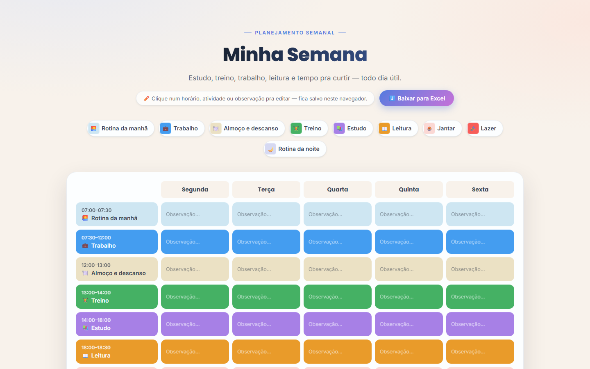
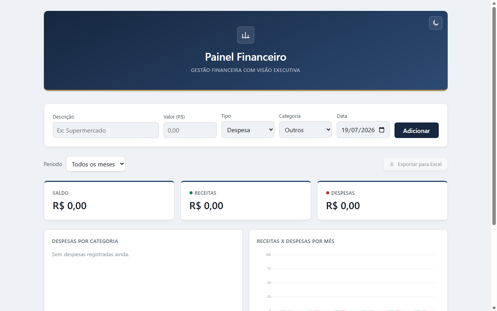

Desenvolvimento de sites
Desenvolvimento de sites profissionais do zero.
Transformo sua ideia em um site moderno, rápido e responsivo — com uma experiência de usuário que conversa direto com quem visita.
Sou desenvolvedor Front-end focado na criação de sites modernos, responsivos e profissionais. Busco transformar ideias em experiências digitais bonitas, rápidas e fáceis de usar.
Comunicação direta e prazos combinados sem enrolação.
Seu site funcionando perfeitamente em qualquer tela.
Acompanhamento após a entrega para ajustes e melhorias.
Próximo passo: aprofundando conhecimentos em Back-end (Java) para evoluir como desenvolvedor Full Stack.


Desenvolvimento de sites profissionais do zero.
Sites adaptados para celular, tablet e computador.
Integração com WhatsApp, formulários e APIs.
Otimização para sites rápidos e modernos.
Melhorias, atualizações e manutenção de sites.
Você me conta a ideia, o objetivo do site e referências que gosta.
Envio um orçamento claro, com escopo e prazo definidos, sem letras miúdas.
Construo o site com código limpo, testado em diferentes telas e navegadores.
Site no ar e acompanhamento para ajustes depois da entrega.


Novo case em breve
"O Rotina Pessoal mudou a forma como organizo minha semana. Antes eu vivia com anotações soltas e esquecia compromisso; agora vejo tudo num só lugar e ainda exporto pra Excel quando preciso. Entrega rápida e o Gustavo entendeu exatamente o que eu precisava."
"Com o Controle Financeiro finalmente consegui enxergar pra onde meu dinheiro estava indo. Os gráficos por categoria ajudaram muito a cortar gastos desnecessários. Ferramenta simples, direta e exatamente o que eu precisava no dia a dia."
O valor varia de acordo com a complexidade e o número de páginas do projeto. Me chame no WhatsApp e conte sua ideia — o orçamento é gratuito e sem compromisso.
Depende do escopo, mas sites institucionais costumam levar de 1 a 3 semanas. O prazo é combinado com você antes de começar o desenvolvimento.
Não precisa se preocupar antes de fechar o projeto. Eu te oriento sobre as melhores opções e te ajudo a configurar tudo.
Sim. Ofereço suporte após a entrega para ajustes, atualizações e pequenas melhorias no site.
As condições de pagamento são combinadas junto com o orçamento, de forma clara antes do início do projeto.
Entre em contato e leve seu projeto para o próximo nível.